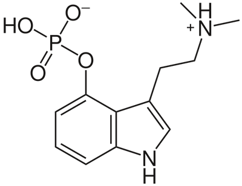

PSILOCYBIN MUSHROOMS
The use of psilocybin, also known as magic mushrooms, in conjunction with psychotherapy often leads to long term effects of mindfulness and serenity. Indeed, research studies have found that consuming psychoactive mushrooms in a supportive setting can help patients gain a wider, more open mindset and lead them to have deep and meaningful encounters not only with themselves, but also with the world around them. As an example, researchers conducted a placebo-controlled study in 2015 concerning psilocybin-induced spiritual experiences in patients who were simultaneously undergoing psychotherapy and found that most individuals experienced a significant rise in feelings of unity, insightfulness, profoundness related to life and existence, inner peace, love, and more (Nichols, par. 39). Similarly, subjects of this study also encountered positive, lasting changes in their relationship with nature and the overall way in which they perceived the environment (par. 34).

Main benefits: Increase in mindfulness, inner peace and self-acceptance